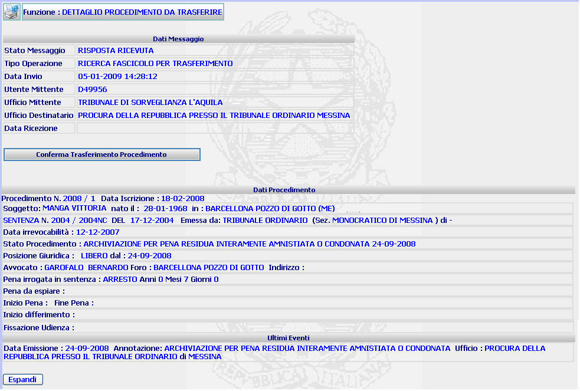

DETTAGLIO PROCEDIMENTO DA TRASFERIRE: La funzione consente di visualizzare il dettaglio del procedimento Siep relativo ad una Procura di altro Distretto e di trasferirlo nella propria banca dati. N.B. Il trasferimento del titolo Siep non comporta in alcun modo l'iscrizione di un nuovo procedimento Sius; per effettuare l'iscrizione di un nuovo procedimento Sius utilizzando il titolo esecutivo trasferito occorre utilizzare la funzione "Iscrizione manuale - Ricerca titolo esecutivo per numero Siep"
LE MASCHERE VIDEO
La funzione viene realizzata attraverso la maschera seguente in cui compare il dettaglio del procedimento da trasferire.

COME FARE PER ...
| Per trasferire il procedimento Siep selezionato relativo ad una Procura di altro Distretto nella propria banca dati, l'utente deve cliccare sul bottone |
| Per visualizzare i seguenti dati relativi al procedimento Siep selezionato: reati, aggravanti/attenuanti, pene accessorie e PM assegnatario, l'utente deve selezionare il bottone |
PULSANTI
E' presente il pulsante
 , facente parte del gruppo di
pulsanti di "Uso Comune"
, facente parte del gruppo di
pulsanti di "Uso Comune"
BOTTONI
Oltre ai comandi funzionali relativi al menù verticale sono presenti i seguenti bottoni:
|
COMANDI |
DESCRIZIONE |
|
|
A fronte di tale comando, il sistema trasferisce il procedimento Siep selezionato relativo ad una Procura di altro Distretto nella propria banca dati |
|
|
A fronte di tale comando, il sistema consente di visualizzare i seguenti dati relativi al procedimento Siep selezionato: reati, aggravanti/attenuanti, pene accessorie e PM assegnatario |